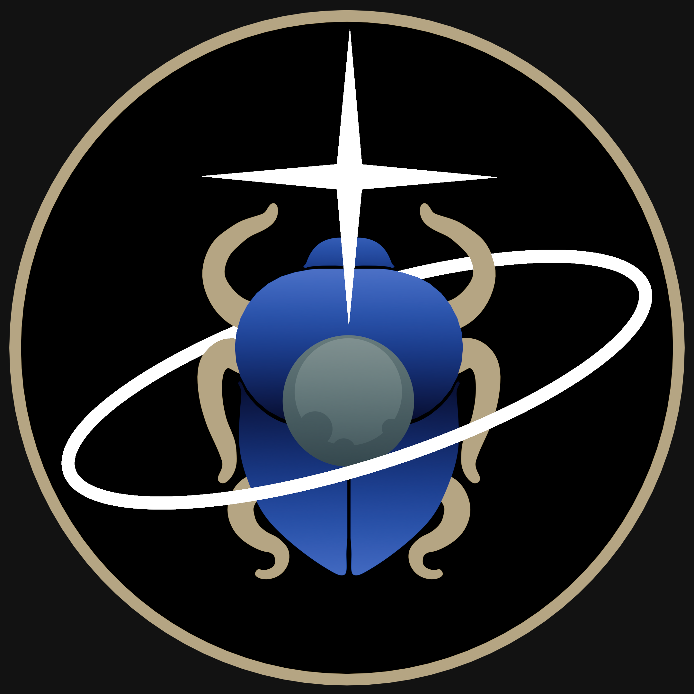

About Scarabaeus#
Last revised by M. Pugliatti on 2025 MAR 18
The Team#
The SCB development team is made up of undegraduate, PhD, and postdoctoral students, as well as professors and engineers from many different institutions and nationalities.
Current Members#
Prof. Jay W. McMahon (ORCCA, CU Boulder)
Dr. Mattia Pugliatti (ORCCA, CU Boulder)
Mr. Giovanni Fereoli (ORCCA, CU Boulder)
Mr. Santhosh Pattamudu-Manoharan (ORCCA, CU Boulder)
Mr. Zachary Ellis (ORCCA, CU Boulder)
Mr. Mohamed Almashjari (UAESA)
Mr. Mohamed Kuleib (TII)
Ms. Wendy Frank (LASP, CU Boulder)
Dr. Jeremy Knittel (LASP, CU Boulder)
Past Members#
Ms. Annalise Cabra (ORCCA, CU Boulder)
Dr. Anivid Faura-Pedros (ORCCA, CU Boulder)
Mr. Kian Shakerin (ORCCA, CU Boulder)
Dr. Chloe Long (ORCCA, CU Boulder)
Dr. Dahlia Baker (ORCCA, CU Boulder)
Dr. Jacopo Villa (ORCCA, CU Boulder)
Dr. Matthew Givens (ORCCA, CU Boulder)
Dr. Spencer Boone (ORCCA, CU Boulder)
Origin of the Name#
{kind=link}
Scarabs (Scarabaeus satyrus, also known as dung beetles) are known to navigate across the desert by looking at the Milky Way. The tool has taken this name in their honor.
Motivation#
Building up on existing OD software the likes of GEODYN, ODTBX, ODTK, GMAT, TUDAT, GODOT, CubeNav, Orbit14, and MONTE and on the successful development of Basilisk from our colleagues at the AVS laboratory at CU Boulder, the SCB development team mission statement is:
“To develop a modular, open-source, python front-end, C++ back-end, OD sofware that uses radiometric and opnav measurements.””